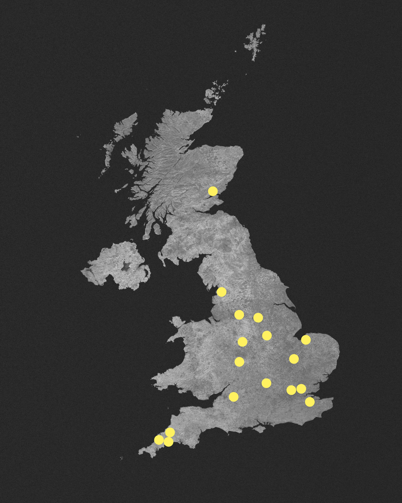

Tales from the Laundromat is an archive of launderette stories, collected and curated by Kai-Oi Joyce Yung, and commissioned by Quiet Down There.
For more information, visit the artist's
website
or read the
project blog
. Website by
Jessie Zhang
.
Satellite image: ESA/Belspo – produced by VITO,
Creative Commons CC BY-SA 3.0 IGO
(image edited)
Tales from the Laundromat
Tales from the Laundromat

< back
"When you’re in people’s knickers - all boundaries disappear"